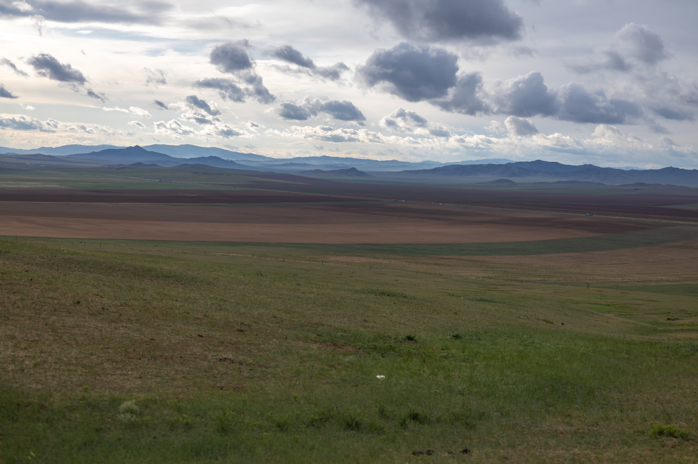
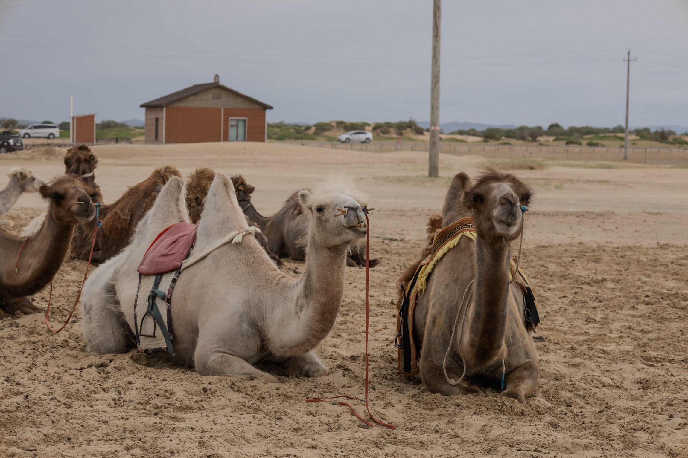
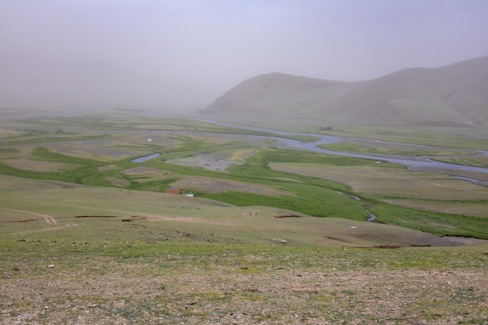
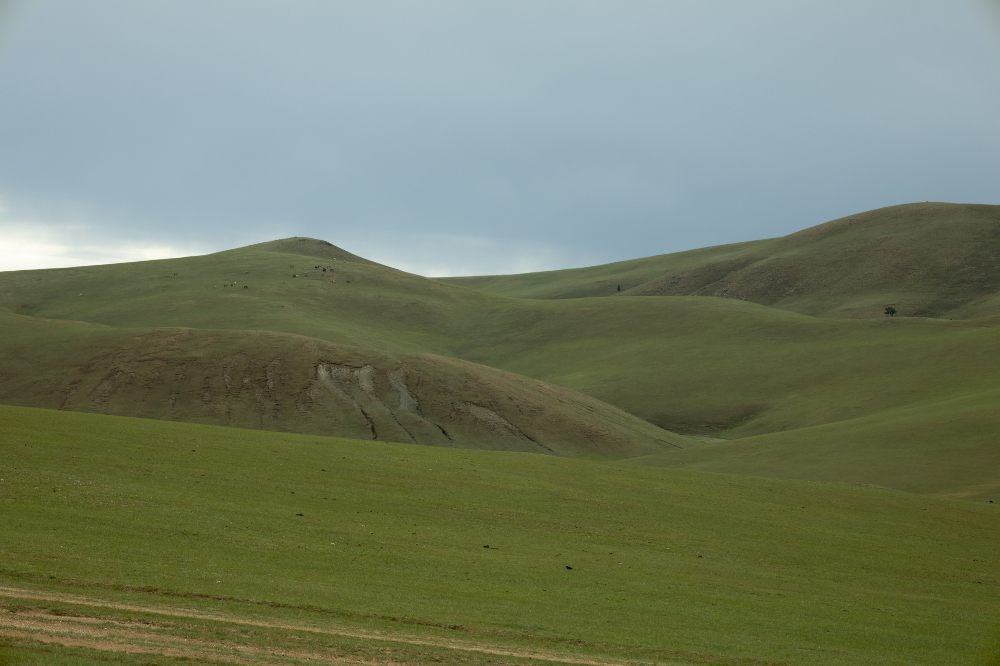
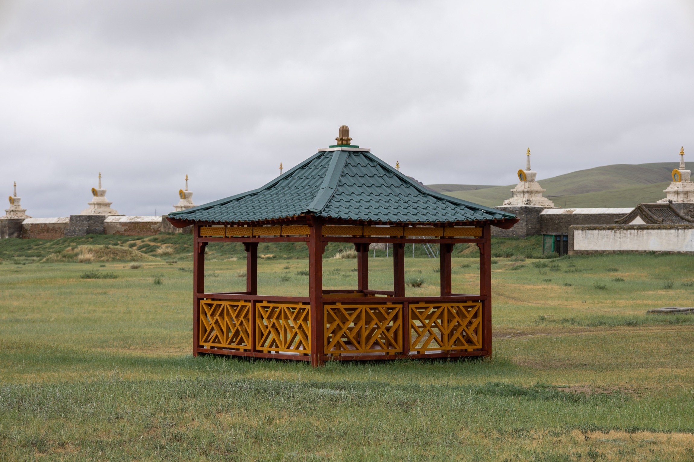
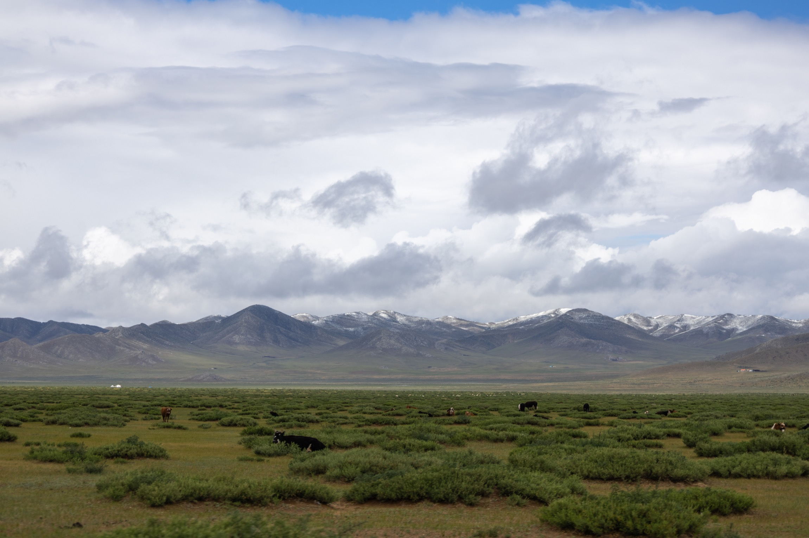

June 17 · Ulaanbaatar
苏赫巴托广场：旅程从城市中心开始
旅程的第一张照片停在乌兰巴托的核心广场。国旗、纪念性建筑和晴朗天空，把这次向草原深入的路线先固定在一个清晰的城市坐标上。

June 17-19 · Mongolia
从乌兰巴托的苏赫巴托广场出发，经过迷你戈壁、鄂尔浑河谷、哈拉和林与额尔德尼昭寺，最后抵达呼斯台国家公园。
张精选照片
个时间地点块
天的路线记录
Journal
June 17 · Ulaanbaatar
旅程的第一张照片停在乌兰巴托的核心广场。国旗、纪念性建筑和晴朗天空，把这次向草原深入的路线先固定在一个清晰的城市坐标上。

June 18 · Mini Gobi
从城市驶向内陆，地貌忽然变得干燥开阔。沙丘、车辙和骆驼把蒙古的另一种尺度带到眼前。

June 18 · Orkhon Valley
河谷在雨雾里铺开，水道把草地切成弯曲的线。远处山坡被雾压低，视野从沙地转入湿润的绿色。

June 18 · Kharkhorin
傍晚前后的光线更沉，低缓山坡连成绿色波浪。这里的照片更安静，像是在进入古都之前的一段缓冲。

June 19 · Erdene Zuu
这一天从寺院开始。白塔沿院墙排开，亭子、殿宇和阴天里的绿地，让哈拉和林的历史感变得可触可见。

June 19 · Hustai National Park
旅程的尾声回到高草地、远山和动物。云层很低，雪线、牧群和草甸把最后一段路收束成开阔的景象。
Gallery
Route Notes
这次页面按文件名中的日期和地点重新整理。每张图片都保留在对应的地点块里，照片墙可以按地点筛选，点击任意照片可以查看大图和说明。
乌兰巴托，苏赫巴托广场。用城市中心作为旅程起点。
迷你戈壁、鄂尔浑河谷、哈拉和林。一天里从沙丘转入河谷，再到古都附近的草坡。
额尔德尼昭寺与呼斯台国家公园。上午看寺院与院墙，之后回到远山、草甸和动物所在的开放景观。